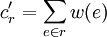
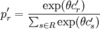

The tool <SUMO_HOME>/tools/assign/duaIterate.py can be used to compute the (approximate) dynamic user equilibrium.
python duaIterate.py -n <network-file> -t <trip-file> -l <nr-of-iterations>
Contents |
This script tries to calculate a user equilibrium, that is, it tries to find a route for each vehicle (each trip from the trip-file above) such that each vehicle cannot reduce its travel cost (usually the travel time) by using a different route. It does so iteratively (hence the name) by first routing the vehicles in a network with default edge costs (usually the travel time if driving with maximum speed) then simulating the calculated routes resulting in "real" edge costs which are fed back into the router for calculating new routes and so forth. The number of iterations is fixed by a parameter see above. In order to ensure convergence there are different methods employed to calculate the route choice probability from the route cost (so the vehicle does not always choose the "cheapest" route). In general, new routes will be added by the router to the route set of each vehicle in each iteration (at least if none of the present routes is the "cheapest") and may be chosen according to the route choice mechanisms described below.
The two methods which are implemented are called Gawron (reference needed!!!) and Logit (reference needed!!!) in the following. The input for each of the methods is a weight or cost function w on the edges of the net, coming from the simulation or default costs (in the first step or for edges which have not been traveled yet), and a set of routes R where each route r has an old cost cr and an old probability pr (from the last iteration) and needs a new cost cr' and a new probability pr'.
The Logit mechanism applies a fixed formula to each route to calculate the new probability. It ignores old costs and old probabilities and takes the route cost directly as the sum of the edge costs from the last simulation.

The probabilities are calculated from an exponential function with parameter θ scaled by the sum over all route values:
